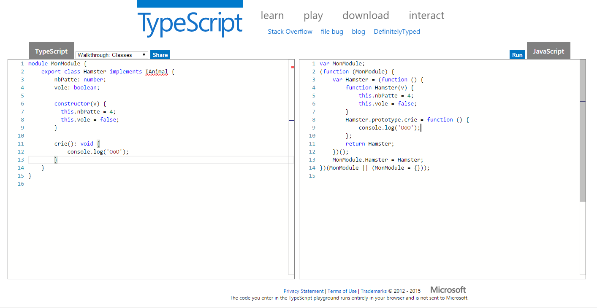

Module interne
Module externe
Par Félix Billon
Sommaire
- Introduction aux modules
- Module interne
- Module externe
- Conclusion
Introduction aux modules : pourquoi ?
- Eviter les collisions de nom dans l'espace de nom global.
- Découper, organiser et diviser les responsabilités.
- Encapsulation.
Introduction aux modules : module pattern
/**Objet anonyme**/
var Module = (function () {
var privateMethod = function () {};
return {
publicMethodOne: function () {
// Je peut appeler ma méthode privées
},
publicMethodtwo: function () {
},
publicMethodThree: function () {
}
};
})();
/**Objet local**/
var Module = (function () {
var myObject = {};
var privateMethod = function () {};
myObject.publicMethodOne = function () {
};
return myObject;
})();
Introduction aux modules : revealing module pattern
var Module = (function () {
var privateMethod = function () {
// privée
};
var someMethod = function () {
// public
};
var anotherMethod = function () {
// public
};
return {
someMethod: someMethod,
anotherMethod: anotherMethod
};
})();
Introduction aux modules : AMD et CommonJS Module
- Définition des modules, chargement des modules et de leurs dépendances.
- AMD -> coté browser -> chargement asynchrone.
- CommonJS Modules -> coté serveur -> chargement synchrone.
- Implémentations AMD : RequireJS, curl.js, lsjs, ...
- Implémentations CommonJs Modules: Node, Narwhal, ...
Introduction aux modules : UMD et EcmaScript 6
- UMD -> compatible AMD et CommonJs.
- EcmaScript 6 -> standardisation de la syntaxe de définition des modules.
- EcmaScript 6 -> API de chargement des modules.
Module interne (ou namespace)
Module interne : le choix
- Beaucoup de ressources sur le net (exemple, proto,...), utilisent les modules internes.
- La simplicité.
- Rappel les namespaces en C#, Java, ...
Module interne V1 : mise en place
Fichier : IAnimal.ts
module MonModule {
export interface IAnimal {
nbPatte: number;
vole: boolean;
crie(): void;
}
}
Module interne V1 : mise en place
Fichier : Hamster.ts
/// <reference path="IAnimal.ts" />
module MonModule {
export class Hamster implements IAnimal{
nbPatte: number;
vole: boolean;
constructor(v) {
this.nbPatte = 4;
this.vole = false;
}
crie(): void {
console.log('OoO');
}
}
}
Module interne V1 : mise en place
Module interne V1 : mise en place
Fichier : main.ts
/// <reference path="IAnimal.ts" />
/// <reference path="Hamster.ts" />
let hamster: MonModule.IAnimal = new MonModule.Hamster();
hamster.crie();
Module interne V2 : mise en place
Fichier : Hamster.ts
/// <reference path="_all.ts" />
module MonModule {
export class Hamster implements IAnimal{
nbPatte: number;
vole: boolean;
constructor(v) {
this.nbPatte = 4;
this.vole = false;
}
crie(): void {
console.log('OoO');
}
}
}
Module interne V2 : mise en place
Fichier : _all.ts
/// <reference path="IAnimal.ts" />
/// <reference path="Hamster.ts" />
Module interne V2 : mise en place
Fichier : main.ts
/// <reference path="_all.ts" />
let hamster: MonModule.IAnimal = new MonModule.Hamster();
hamster.crie();
Module interne : avantages
- Permet de créer des namespaces.
- Facile d'utilisation, pas de dépendances à gérer (tout dépend de tout).
- Compilation façile à mettre en place (option --out du compilateur Typescript).
Module interne : inconvenients
- Les performances de compilation deviennent vite désatreuses. Même avec build incrémentales.
- Les dépendances ne sont pas explicites.
- Beaucoup d'outil ne gère pas les modules internes.
- Concatener les fichiers n'est pas le rôle du compilateur.
- Le compilateur re-déclare à chaque utilisation les modules créés.
- Les modules créés sont rattachés à l'objet window.
- Difficile de switcher sur du CommonJs, AMD, Ecmascript 6, ...
Module externe
Module externe : mise en place
Fichier : IAnimal.ts
interface IAnimal {
nbPatte: number;
vole: boolean;
crie(): void;
}
export default IAnimal;
Module externe : mise en place
Fichier : Hamster.ts
import IAnimal from './IAnimal.ts'; // OU import IAnimal = require('./IAnimal');
export default class Hamster implements IAnimal{
nbPatte: number;
vole: boolean;
constructor(v) {
this.nbPatte = 4;
this.vole = false;
}
crie(): void {
console.log('OoO');
}
}
}
Module externe : mise en place
Fichier : main.ts
import IAnimal from './IAnimal.ts'; // OU import IAnimal = require('./IAnimal');
import Hamster from './Hamster.ts'; // OU import Hamster = require('./Hamster');
let hamster: IAnimal = new Hamster();
hamster.crie();
Module externe : avantages
- Performances de compilations améliorées.
- Dépendances explicites.
- Ne ferme la porte à aucun outil (browerify, webpack, dependency viewer...).
- Standard avec la syntaxe ES6.
Module externe : inconvenients
- Obligé d'utiliser un outil pour charger les modules.
- AMD VS CommonJs VS UMD VS ES6
Module externe : choix transpilation
- '--module' paramètre du compilateur ou section 'module' du tsconfig.json
- Valeurs possibles :
- AMD
- CommonJS
- UMD
- SystemJS
Module externe : quel outils utiliser ?
- RequireJS (AMD)
- Browserify (AMD, CommonJS)
- WebPack (AMD, CommonJS)
- SystemJS (SystemJS)
Conclusion
- Depuis la version 1.5 module interne -> namespace.
- Utiliser les modules externes pour tous vos projets !
- Utiliser les modules internes pour proto/démo !